Consultation & Care
Before the Treatment: Why Thoughtful Aesthetic Care Begins with a Consultation
A good plan begins before a device is chosen: with history, priorities, suitability and realistic expectations.
Read articleSkin health · Technology · Considered care
Clear perspectives on skin health, aesthetic treatments, prevention, recovery, scalp care and thoughtful planning.

Lead story
A philosophy of purposeful care: less excess, more clarity, safety and choices that respect your routine.
Read the lead essayConsultation & Care
These essays explain why simplifying, observing and assessing carefully can be more useful than immediately adding another treatment or product.
Consultation & Care
A good plan begins before a device is chosen: with history, priorities, suitability and realistic expectations.
Read article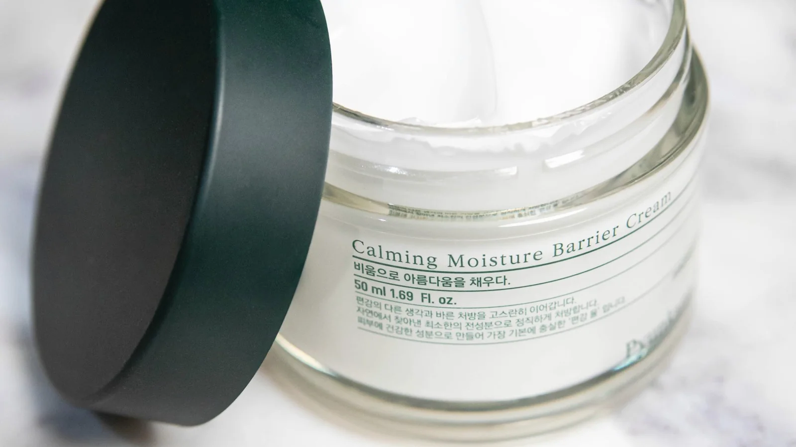
Consultation & Care
How to recognise an overwhelmed skin barrier, simplify an overactive routine and restore tolerance before adding actives or procedures.
Read articleConsultation & Care
What careful professional cleansing can clarify, which congestion can be treated safely, and why more pressure never means better care.
Read articleSkin Health
Colour, texture and redness can look deceptively simple. Responsible planning begins by understanding their pattern, history and possible causes.
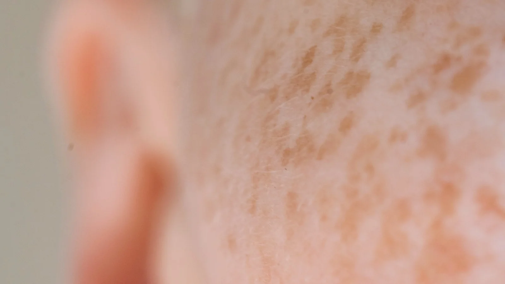
Skin Health
Pigmentation has patterns, triggers and memory. Understand why colour must be assessed before choosing how—or whether—to treat it.
Read articleClinical notes
Acne scarring and persistent redness both reward precise assessment. A device name alone cannot explain what should happen next.
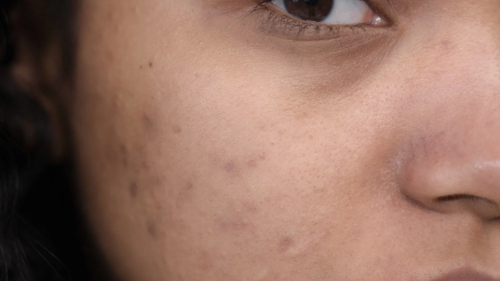
Skin Health
Acne scars differ in depth, shape and colour. Learn why texture usually needs staged, layered treatment rather than one universal device.
Read article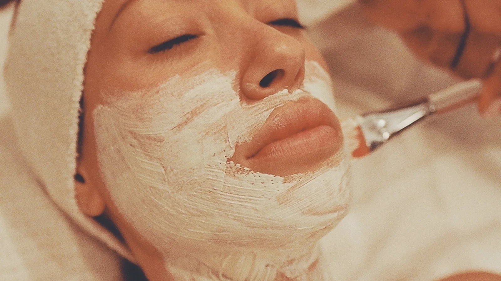
Laser & Technology
Persistent redness is not one diagnosis. A careful guide to vessels, inflammation, laser and light, and when medical assessment comes first.
Read articleLaser & Technology
Preparation, recovery, treatment intervals and biological timing matter as much as the device itself.
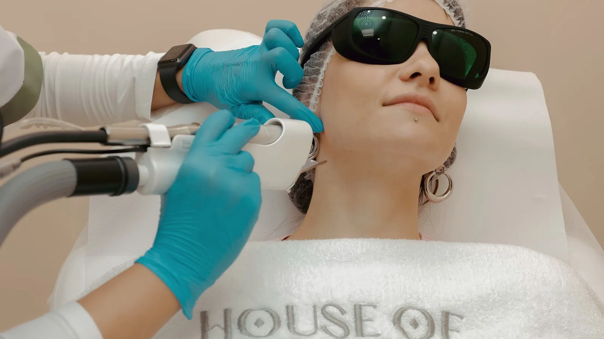
Laser & Technology
An honest account of fractional CO₂ laser: who may suit it, how preparation shapes safety, what recovery involves and why remodelling takes time.
Read article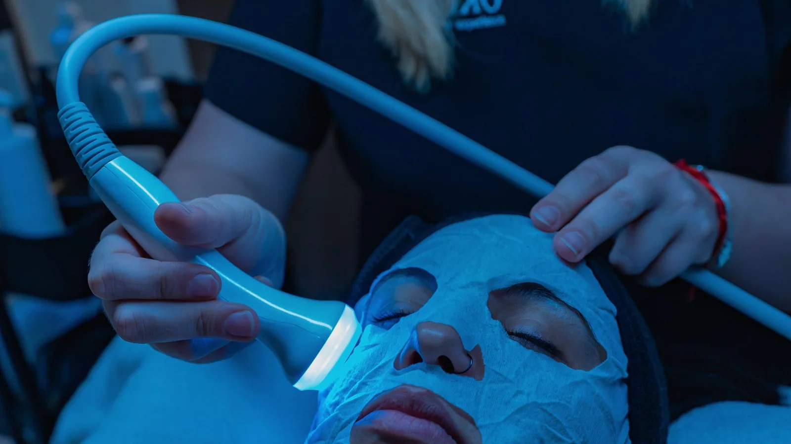
Laser & Technology
How ultrasound and radiofrequency differ, where gradual collagen support can help, and why neither should be framed as a non-surgical facelift.
Read article
Laser & Technology
Why the hair cycle makes laser reduction a series, how preparation protects skin, and why maintenance and hormonal context matter.
Read articleHair & Scalp
Hair thinning can be deeply personal. A responsible first step is to understand what is changing and when medical investigation may be needed.
10 · Hair & Scalp
Shedding, thinning and breakage need different answers. A cause-led guide to scalp assessment, referral and realistic procedural support.
Read article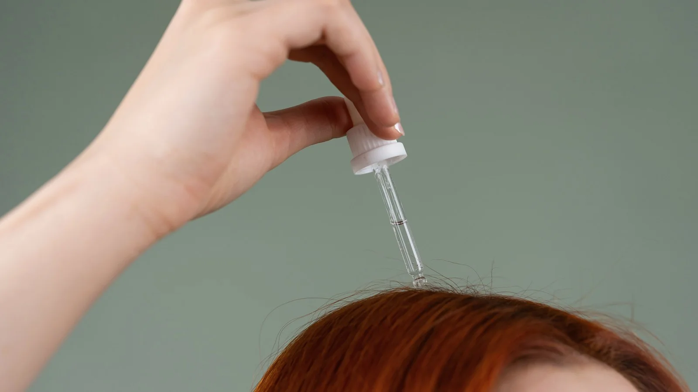
CONTINUATION · ARTICLES 11–60
The same editorial edition continues here, with direct access to every guide.
Skin health
A practical, considered guide to sun protection that fits real life, including what to assess before choosing professional care in Londrina.
Read the article →Skin health
A practical, considered guide to when an overworked skin barrier needs a pause, including what to assess before choosing professional care in Londrina.
Read the article →
Skin health
A practical, considered guide to acids in a skincare routine: order, tolerance and care, including what to assess before choosing professional care in Londrina.
Read the article →Skin health
A practical, considered guide to daily cleansing: removing what is needed, preserving what matters, including what to assess before choosing professional care in Londrina.
Read the article →
Skin health
A practical, considered guide to make-up and sensitive skin: what to notice without blaming products, including what to assess before choosing professional care in Londrina.
Read the article →
Texture and scars
A practical, considered guide to pores and texture: why there is no permanent ‘closing’ solution, including what to assess before choosing professional care in Londrina.
Read the article →Skin health
A practical, considered guide to blackheads and extraction: when persistence at home can harm the skin, including what to assess before choosing professional care in Londrina.
Read the article →
Texture and scars
A practical, considered guide to active acne before texture: why the order of care matters, including what to assess before choosing professional care in Londrina.
Read the article →
Texture and scars
A practical, considered guide to post-acne marks and scars: two different skin stories, including what to assess before choosing professional care in Londrina.
Read the article →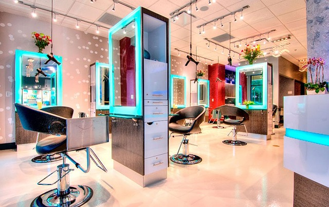
Skin health
A practical, considered guide to persistent redness: when to observe and when to investigate, including what to assess before choosing professional care in Londrina.
Read the article →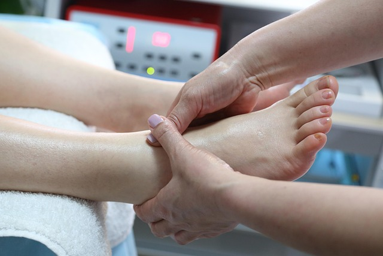
Pigmentation
A practical, considered guide to melasma, heat and light: looking beyond direct sun exposure, including what to assess before choosing professional care in Londrina.
Read the article →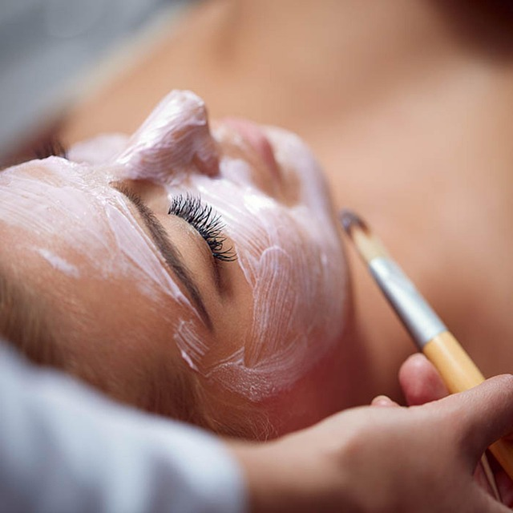
Pigmentation
A practical, considered guide to post-inflammatory pigmentation: why the cause belongs in the plan, including what to assess before choosing professional care in Londrina.
Read the article →Skin health
A practical, considered guide to skin during pregnancy: safer questions before changing a routine, including what to assess before choosing professional care in Londrina.
Read the article →
Skin renewal
A practical, considered guide to at-home peels: why concentration without context can be costly, including what to assess before choosing professional care in Londrina.
Read the article →Skin renewal
A practical, considered guide to physical exfoliation: when feeling the grains stops being renewal, including what to assess before choosing professional care in Londrina.
Read the article →Skin renewal
A practical, considered guide to microdermabrasion: realistic goals for surface renewal, including what to assess before choosing professional care in Londrina.
Read the article →
Skin renewal
A practical, considered guide to diamond-tip exfoliation: what to assess before seeking instant effects, including what to assess before choosing professional care in Londrina.
Read the article →Skin renewal
A practical, considered guide to ultrasonic exfoliation: where it can fit within thoughtful care, including what to assess before choosing professional care in Londrina.
Read the article →
Skin renewal
A practical, considered guide to retinoic peels: recovery planning starts before application, including what to assess before choosing professional care in Londrina.
Read the article →
Skin renewal
A practical, considered guide to jessner peels: indication and caution before chasing peeling, including what to assess before choosing professional care in Londrina.
Read the article →
Laser and technology
A practical, considered guide to laser and tanned skin: why waiting can be the safer choice, including what to assess before choosing professional care in Londrina.
Read the article →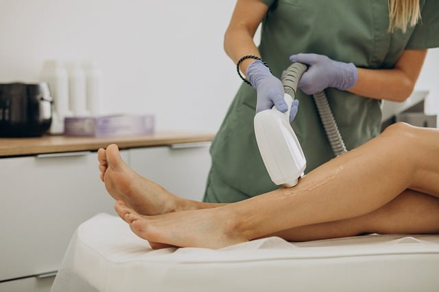
Laser and technology
A practical, considered guide to facial laser hair removal: why hormonal context belongs in the conversation, including what to assess before choosing professional care in Londrina.
Read the article →Laser and technology
A practical, considered guide to laser hair removal intervals: what the hair cycle explains, including what to assess before choosing professional care in Londrina.
Read the article →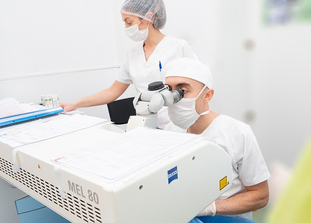
Laser and recovery
A practical, considered guide to co₂ laser and important events: planning without someone else’s calendar, including what to assess before choosing professional care in Londrina.
Read the article →Laser and recovery
A practical, considered guide to after co₂ laser: sun protection is recovery, not an afterthought, including what to assess before choosing professional care in Londrina.
Read the article →Texture and scars
A practical, considered guide to laser and acne scars: why a technology name does not decide suitability, including what to assess before choosing professional care in Londrina.
Read the article →
Laser and technology
A practical, considered guide to intense pulsed light: why skin, goals and season all matter, including what to assess before choosing professional care in Londrina.
Read the article →Laser and technology
A practical, considered guide to radiofrequency and collagen: why time belongs in the expectation, including what to assess before choosing professional care in Londrina.
Read the article →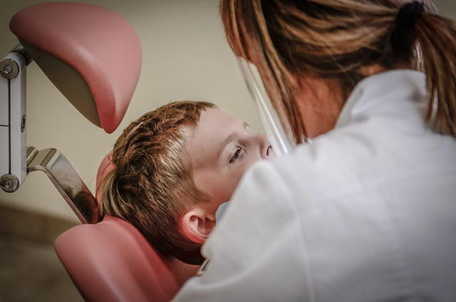
Laser and technology
A practical, considered guide to ultraformer mpt: clear goals before talking about lifting, including what to assess before choosing professional care in Londrina.
Read the article →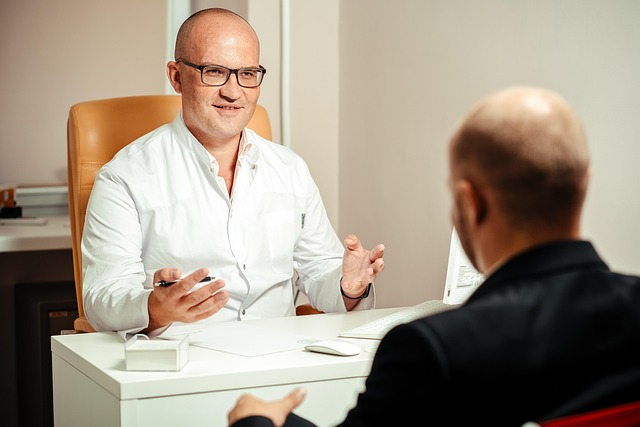
Laser and technology
A practical, considered guide to plasma technology: why assessment and aftercare cannot be shortcuts, including what to assess before choosing professional care in Londrina.
Read the article →Vessels and circulation
A practical, considered guide to visible small vessels: appearance, symptoms and assessment are not the same, including what to assess before choosing professional care in Londrina.
Read the article →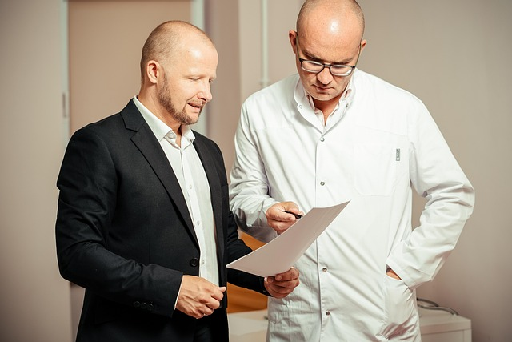
Vessels and circulation
A practical, considered guide to peim: information that matters before treating small vessels, including what to assess before choosing professional care in Londrina.
Read the article →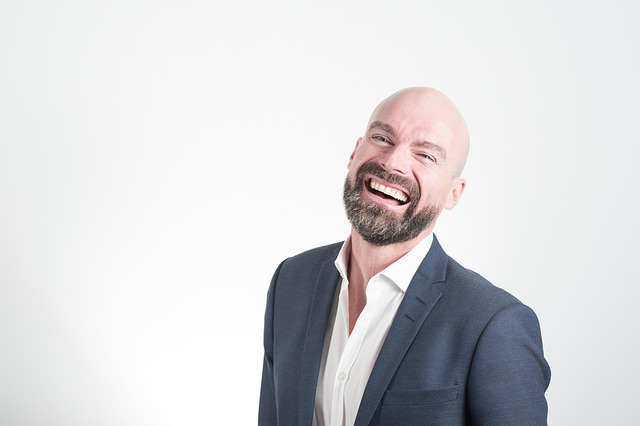
Facial planning
A practical, considered guide to a first botulinum toxin consultation: movement, priorities and limits, including what to assess before choosing professional care in Londrina.
Read the article →
Facial planning
A practical, considered guide to botulinum toxin and asymmetry: observation is not a promise of perfection, including what to assess before choosing professional care in Londrina.
Read the article →Facial planning
A practical, considered guide to the lower face: a careful conversation about movement and contour, including what to assess before choosing professional care in Londrina.
Read the article →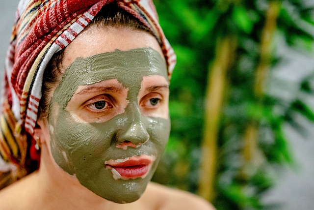
Facial planning
A practical, considered guide to natural-looking facial planning: proportion, not trend, including what to assess before choosing professional care in Londrina.
Read the article →Texture and scars
A practical, considered guide to microneedling and pigmentation: why risk changes the indication, including what to assess before choosing professional care in Londrina.
Read the article →Texture and scars
A practical, considered guide to microneedling with inflamed acne: why a pause may be part of care, including what to assess before choosing professional care in Londrina.
Read the article →
Hair and scalp
A practical, considered guide to hair shedding: warning signs before choosing a protocol, including what to assess before choosing professional care in Londrina.
Read the article →
Hair and scalp
A practical, considered guide to hair thinning and photographs: documenting change without rushing to conclusions, including what to assess before choosing professional care in Londrina.
Read the article →
Hair and scalp
A practical, considered guide to mmp for the scalp: questions that come before the technique, including what to assess before choosing professional care in Londrina.
Read the article →
Hair and scalp
A practical, considered guide to scalp mesotherapy: why a protocol is not a universal treatment, including what to assess before choosing professional care in Londrina.
Read the article →Consultation and care
A practical, considered guide to how to prepare for an aesthetic consultation without deciding everything first, including what to assess before choosing professional care in Londrina.
Read the article →Consultation and care
A practical, considered guide to useful questions to ask before an aesthetic procedure, including what to assess before choosing professional care in Londrina.
Read the article →Recovery and safety
A practical, considered guide to after a procedure: signs that call for contact, not online remedies, including what to assess before choosing professional care in Londrina.
Read the article →Recovery and safety
A practical, considered guide to sun exposure and skin recovery: why recent exposure changes more than a tan, including what to assess before choosing professional care in Londrina.
Read the article →Consultation and care
A practical, considered guide to before-and-after photographs: curiosity without turning an image into a promise, including what to assess before choosing professional care in Londrina.
Read the article →Consultation and care
A practical, considered guide to privacy in aesthetic care: why consent remains central, including what to assess before choosing professional care in Londrina.
Read the article →Skin health
A practical, considered guide to a minimal routine for overwhelmed skin: why simplifying can be progress, including what to assess before choosing professional care in Londrina.
Read the article →Consultation and care
A practical, considered guide to biological time and expectations: aesthetic care is not express delivery, including what to assess before choosing professional care in Londrina.
Read the article →
A note from Franciele
These articles offer useful context, but they cannot assess your skin or confirm suitability. Bring your questions to a consultation if you would like guidance that reflects your own history and priorities.